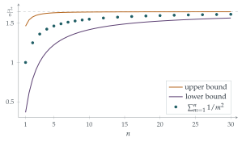

Use De Moivre’s theorem to show that, if \(\sin\theta \neq 0\), then \[\frac{(\cot\theta + \mathrm{i})^{2n+1} - (\cot\theta - \mathrm{i})^{2n+1}}{2\mathrm{i}} = \frac{\sin(2n+1)\theta}{\sin^{2n+1}\theta},\] for any positive integer \(n\).
Deduce that the solutions of the equation \[\binom{2n+1}{1} x^n - \binom{2n+1}{3} x^{n-1} + \cdots + (-1)^n = 0\] are \[x = \cot^2\left( \frac{m\pi}{2n+1} \right)\] where \(m = 1, 2, \ldots, n\).
Hence show that \[\sum_{m=1}^{n} \cot^2\left( \frac{m\pi}{2n+1} \right) = \frac{n(2n-1)}{3}.\]
Given that \(0 < \sin\theta < \theta < \tan\theta\) for \(0 < \theta < \frac12\pi\), show that \[\cot^2\theta < \frac{1}{\theta^2} < 1 + \cot^2\theta.\] Hence show that \[\sum_{m=1}^{\infty} \frac{1}{m^2} = \frac{\pi^2}{6}.\]
The hook
In 1650 Pietro Mengoli asked a simple question: what is \[1 + \frac14 + \frac19 + \frac1{16} + \frac1{25} + \cdots\, ?\] The terms shrink fast enough for the sum to converge (Section 2.3 showed it is at most \(2\)), but nobody could find its value. The Bernoulli brothers tried and failed; Jacob Bernoulli publicly begged for help. The problem became known as the Basel problem, after the Bernoullis’ home city.
In 1734 the young Leonhard Euler solved it, and the answer made him famous: the sum is \(\pi^2/6\). Why on earth should \(\pi\), a number about circles, appear in a sum of reciprocal squares? This question gives a complete, rigorous proof using nothing beyond A-level: De Moivre’s theorem, the sum of the roots of a polynomial, and a squeeze.
Before you start
The overall plan is worth seeing before the details.
Part (i) builds a polynomial whose roots are the numbers \(\cot^2\bigl(\frac{m\pi}{2n+1}\bigr)\).
Part (ii) adds up those roots without knowing them individually, using the coefficients.
Part (iii) uses the fact that \(\cot\theta \approx 1/\theta\) for small \(\theta\) to turn a sum of \(\cot^2\) values into a sum of \(1/m^2\) values, and squeezes.
If a polynomial \(a_n x^n + a_{n-1} x^{n-1} + \cdots + a_0\) has roots \(r_1, \ldots, r_n\), what is \(r_1 + \cdots + r_n\) in terms of the coefficients?
It is \(-a_{n-1}/a_n\). That fact is the engine of part (ii).
Working it through
Stage 1 De Moivre
Write \(\cot\theta + \mathrm{i}\) as a single fraction. What do you notice about the numerator?
\(\cot\theta + \mathrm{i} = \dfrac{\cos\theta + \mathrm{i}\sin\theta}{\sin\theta}\), and similarly \(\cot\theta - \mathrm{i} = \dfrac{\cos\theta - \mathrm{i}\sin\theta}{\sin\theta}\). By De Moivre’s theorem, \[(\cot\theta \pm \mathrm{i})^{2n+1} = \frac{\cos(2n+1)\theta \pm \mathrm{i}\sin(2n+1)\theta}{\sin^{2n+1}\theta}.\] Subtracting, the cosines cancel and the sines double, and dividing by \(2\mathrm{i}\) gives \[\frac{\sin(2n+1)\theta}{\sin^{2n+1}\theta}. \qed\]
Stage 2 The polynomial
Now expand the left-hand side with the binomial theorem instead. Write \(c = \cot\theta\) and \(N = 2n + 1\).
In \((c + \mathrm{i})^N - (c - \mathrm{i})^N\), which terms of the two binomial expansions cancel, and which double?
The term containing \(\mathrm{i}^j\) appears with a \(+\) sign in the first expansion and with \((-1)^j\) in the second. So terms with even \(j\) cancel and terms with odd \(j\) double: \[(c + \mathrm{i})^N - (c - \mathrm{i})^N = 2 \sum_{j \text{ odd}} \binom{N}{j} c^{N-j}\, \mathrm{i}^j.\] With \(j = 2k + 1\), \(\mathrm{i}^j = \mathrm{i}\,(-1)^k\) and \(c^{N-j} = c^{2n-2k} = (c^2)^{n-k}\). Dividing by \(2\mathrm{i}\), \[\frac{\sin(2n+1)\theta}{\sin^{2n+1}\theta} = \binom{2n+1}{1} x^n - \binom{2n+1}{3} x^{n-1} + \cdots + (-1)^n,\] where \(x = \cot^2\theta\).
For which \(\theta\) is the left-hand side zero? Use this to find \(n\) different roots of the polynomial.
The left-hand side is zero when \(\sin(2n+1)\theta = 0\) but \(\sin\theta \neq 0\), for instance when \(\theta = \frac{m\pi}{2n+1}\) for \(m = 1, 2, \ldots, n\). These angles all lie strictly between \(0\) and \(\frac\pi2\), where \(\cot\) is positive and strictly decreasing, so the \(n\) values \(\cot^2\bigl(\frac{m\pi}{2n+1}\bigr)\) are all different. A polynomial of degree \(n\) has at most \(n\) roots, so these are all of them.■
Stage 3 Adding the roots
The sum of the roots is \(-(\text{coefficient of } x^{n-1}) / (\text{coefficient of } x^n)\): \[\sum_{m=1}^{n} \cot^2\left( \frac{m\pi}{2n+1} \right) = \frac{\binom{2n+1}{3}}{\binom{2n+1}{1}} = \frac{(2n+1)(2n)(2n-1)}{6\,(2n+1)} = \frac{n(2n-1)}{3}. \qed\] Check with \(n = 1\): \(\cot^2(\pi/3) = \frac13\), and \(\frac{1 \times 1}{3} = \frac13\).
Stage 4 The squeeze
From \(0 < \sin\theta < \theta < \tan\theta\), take reciprocals (which reverses the inequalities) and square: \[\cot^2\theta < \frac{1}{\theta^2} < \frac{1}{\sin^2\theta} = 1 + \cot^2\theta.\]
Put \(\theta = \frac{m\pi}{2n+1}\) and add up over \(m = 1, \ldots, n\). What do the two outer sums become? What does the middle sum have to do with \(\sum 1/m^2\)?
The middle sum is \(\displaystyle\sum_{m=1}^{n} \frac{(2n+1)^2}{m^2 \pi^2}\). By part (ii) the left sum is \(\frac{n(2n-1)}{3}\), and the right sum is \(n + \frac{n(2n-1)}{3} = \frac{2n(n+1)}{3}\). Multiplying through by \(\frac{\pi^2}{(2n+1)^2}\): \[\frac{\pi^2}{3} \cdot \frac{n(2n-1)}{(2n+1)^2} \;<\; \sum_{m=1}^{n} \frac{1}{m^2} \;<\; \frac{\pi^2}{3} \cdot \frac{2n(n+1)}{(2n+1)^2}.\] As \(n \to \infty\), both \(\frac{n(2n-1)}{(2n+1)^2}\) and \(\frac{2n(n+1)}{(2n+1)^2}\) tend to \(\frac24 = \frac12\) (divide top and bottom by \(n^2\)). So both bounds tend to \(\frac{\pi^2}{6}\), and the partial sums, trapped between them, must tend to \(\frac{\pi^2}{6}\) too (Figure 2.4.1).■

Looking back
Information from coefficients. We never found the roots \(\cot^2(m\pi/(2n+1))\) in any simpler form, but we added them up exactly.
Approximate, then squeeze. \(\cot\theta\) is only approximately \(1/\theta\), but the error was controlled by exact inequalities in both directions.
Finite to infinite. Every step until the last concerned finite sums. The infinite sum appeared only when we let \(n \to \infty\) in an inequality, which is the safe way to handle infinity.
What’s really going on
Euler’s own 1734 argument was not rigorous by modern standards, but it was dazzling. A polynomial with roots \(\pm a, \pm b, \pm c, \ldots\) and value \(1\) at \(0\) factorises as \((1 - x^2/a^2)(1 - x^2/b^2)\cdots\). The function \(\frac{\sin x}{x}\) has value \(1\) at \(0\) and roots \(\pm\pi, \pm 2\pi, \pm 3\pi, \ldots\), so, treating it as an “infinite polynomial”, Euler wrote \[\frac{\sin x}{x} = \left(1 - \frac{x^2}{\pi^2}\right)\left(1 - \frac{x^2}{4\pi^2}\right)\left(1 - \frac{x^2}{9\pi^2}\right)\cdots.\] The coefficient of \(x^2\) on the right is \(-\frac{1}{\pi^2}\bigl(1 + \frac14 + \frac19 + \cdots\bigr)\), while from the Maclaurin series \(\frac{\sin x}{x} = 1 - \frac{x^2}{6} + \cdots\) it is \(-\frac16\). Comparing gives \(\pi^2/6\). Our STEP proof is the finite, rigorous version of the same idea: a polynomial whose roots are tied to multiples of \(\pi\), and its second coefficient.
Beyond reciprocal squares
Euler went on to find \(\sum 1/m^4 = \pi^4/90\), \(\sum 1/m^6 = \pi^6/945\), and in general \(\sum 1/m^{2k}\) is a rational multiple of \(\pi^{2k}\), involving the Bernoulli numbers. The odd powers are a different story: as we saw in Section 2.3, nobody knows a formula for \(\sum 1/m^3\). These sums are the values \(\zeta(2), \zeta(4), \ldots\) of the Riemann zeta function, whose behaviour for complex arguments controls the distribution of the primes (Section 1.2).
Where you will see it again
At university you will meet at least three more proofs of \(\zeta(2) = \pi^2/6\): one from Fourier series (writing a function as a sum of sines and cosines), one from a double integral, and one from complex analysis. And the number turns up in probability: the chance that two randomly chosen whole numbers have no common factor is \(6/\pi^2 \approx 0.61\). (A prime \(p\) divides both with probability \(1/p^2\), so the chance that no prime divides both is \(\prod_p (1 - 1/p^2)\), and Euler showed this product equals \(1/\zeta(2)\).) A different appearance of \(\pi\) in a probability limit is the subject of Section 12.23.
The thinking skill
To find a limit, trap the quantity between two simpler expressions with the same limit.
And when you need the sum (or product) of some awkward numbers, try to find a polynomial they are the roots of: the coefficients will give you symmetric combinations of them for free.
Try this next
The 1992 version. (From STEP III, 1992.) Using the polynomial from part (i), show that \[\sum_{k=1}^{n} \tan^2\left( \frac{k\pi}{2n+1} \right) = n(2n+1) \quad\text{and}\quad \sum_{k=1}^{n} \mathrm{cosec}^2\left( \frac{k\pi}{2n+1} \right) = \frac{2n(n+1)}{3}.\] (Hint for the first: the numbers \(\tan^2\) are the reciprocals of the roots. What polynomial has roots \(1/r_i\)?)
Odd squares. Deduce from \(\sum 1/m^2 = \pi^2/6\) that \(1 + \frac19 + \frac1{25} + \frac1{49} + \cdots = \frac{\pi^2}{8}\).
Fourth powers. harder Use \(\sum r_i^2 = (\sum r_i)^2 - 2\sum_{i<j} r_i r_j\) and the coefficients of the polynomial to find \(\sum_{m=1}^{n} \cot^4\bigl(\frac{m\pi}{2n+1}\bigr)\), and adapt the squeeze to prove \(\sum 1/m^4 = \pi^4/90\).
How fast? Using the lower bound in part (iii), show that \(\frac{\pi^2}{6} - \sum_{m=1}^{n} \frac{1}{m^2} < \frac{\pi^2}{4n}\). How large an \(n\) does this guarantee is enough for the partial sum to be within \(0.001\) of \(\pi^2/6\)? Compare with the true error, which is close to \(1/n\).
Further reading
William Dunham, Euler: The Master of Us All (Mathematical Association of America). Chapter 3 tells the story of the Basel problem with the mathematics in full.
Aigner & Ziegler, Proofs from THE BOOK, Chapter 9, “Three times \(\pi^2/6\)”. Includes the proof in this section.
Paul Nahin, Dr. Euler’s Fabulous Formula (Princeton University Press). Complex numbers, Fourier series and sums like this one.